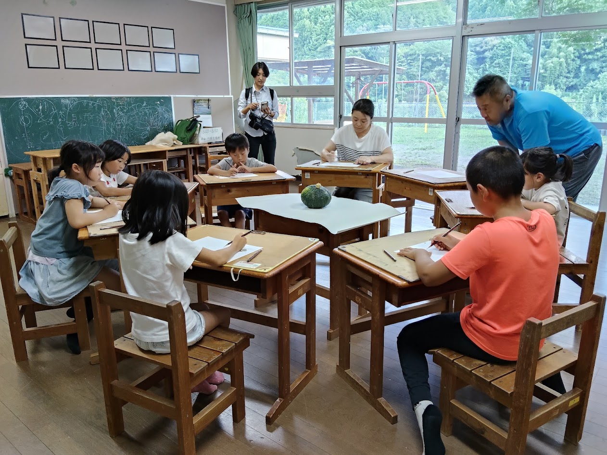
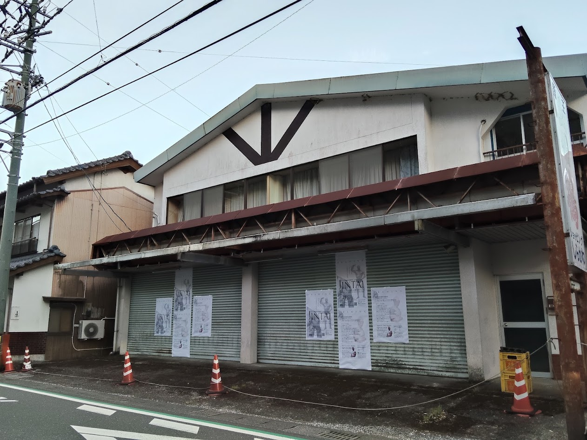
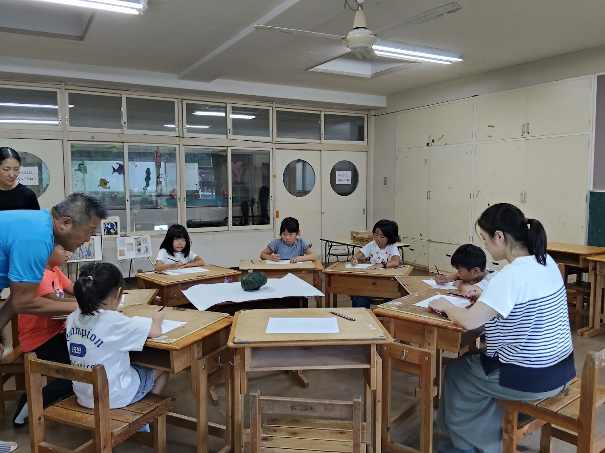
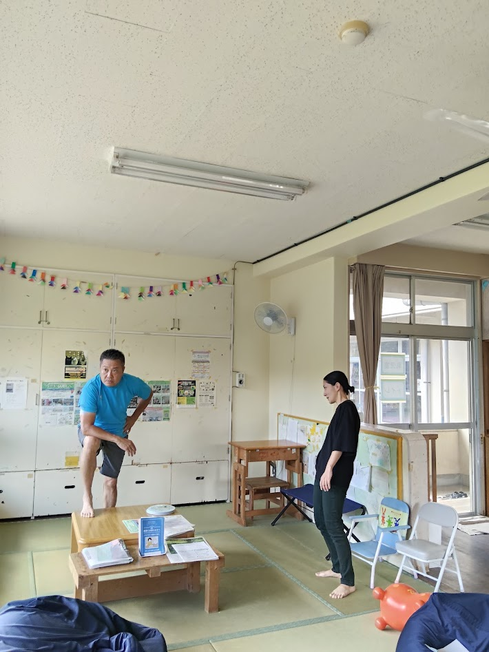
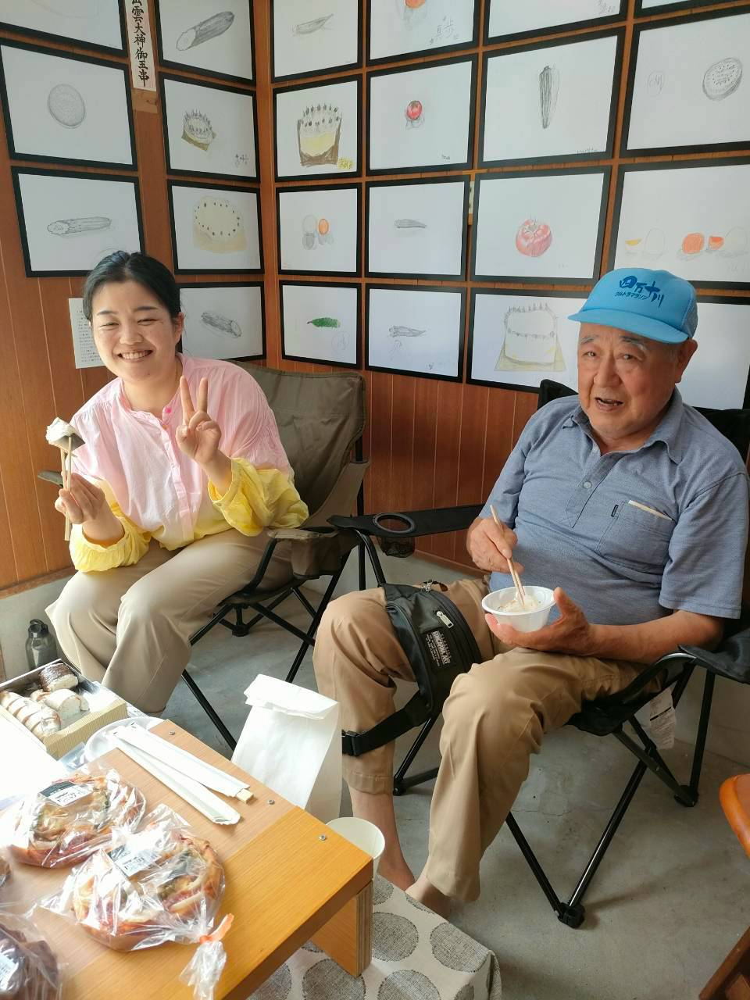
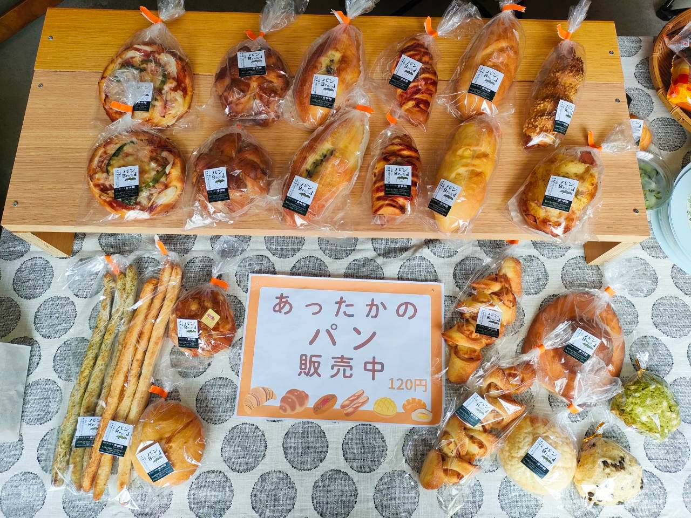
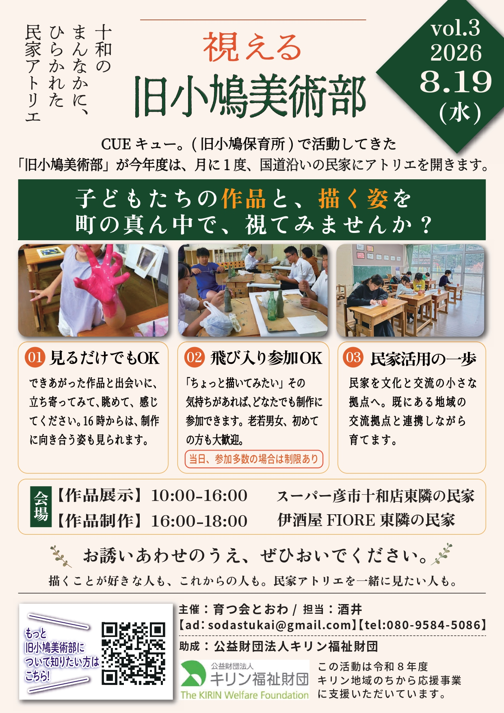

【★要確認：タイトル】シャッターは、ほんとうに掲示板になった

開催日
2026.8.19（水）
会場
M邸（展示）／ CUEキュー。旧小鳩保育所（制作）
開催時間
10:00–18:00
制作時間
16:00–18:00（実際は15:30ごろから）
参加（のべ）
M邸ギャラリーへの来場
6名
美術部員（先生2名込）
10名
道から覗いた・声かけ
0名（制作がCUEキュー。のため）
【★要確認：リード文】第2回で気づいた「下りたシャッターを、まちの掲示板として使う」という方向性を、 第3回の直前に、そのまま実行しました。
📸 当日の様子
※ 写真はクリック（タップ）で拡大。長いキャプションも、拡大すると全文が読めます。





✍️ この日のながれ
【★要確認：チラシでは「作品展示 10:00–16:00＝スーパー彦市十和店東隣の民家（M邸）」 「作品制作 16:00–18:00＝伊酒屋FIORE東隣の民家（S邸）」と告知していましたが、 写真を見るかぎり制作はCUEキュー。の美術室で行われているようです。実際はどうだったか】
🪧 シャッターが、ほんとうに「まちの掲示板」になった
【★要確認：タペストリーを掲示してからの反応。道ゆく人・車からの反応、 問い合わせや申し込みが増えたか、役場・回覧板版チラシとの関係】
💭 手応え
【★要確認：新しい参加者、夏休み中の開催だったことの影響、来場者の様子】
🧭 いちばんの発見：講師より
- 【★要確認：第1回・第2回と同じく、講師からの聞き取りをそのまま箇条書きで】
🌿 まとめと、次回のこと
【★要確認：まとめ】この2日後、8月21日（金）には 「視える 旧小鳩美術部 特別授業 JINTAI」を開催しました。
🗒 開催のおしらせ（配布チラシ）
